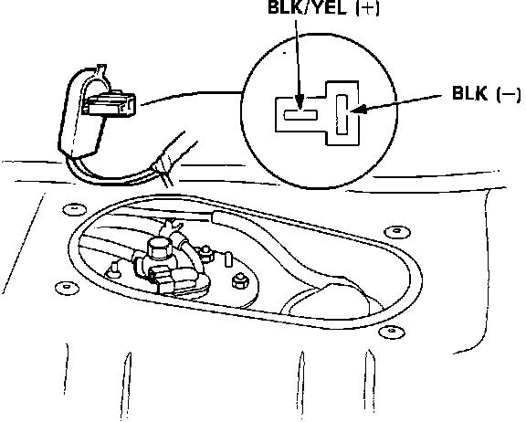

Fuel Pump: Testing and Inspection
1. Remove the fuel filler cap and listen at the fuel filler port. You should be able to hear the fuel pump run for approximately 2 seconds when the ignition is first turned on. If you can hear the pump run, refer to FUEL PRESSURE CHECK. If you cannot hear the pump, proceed to step 2.Fuel Pump Access:

2. Remove the access cover in the luggage compartment.
Fuel Pump Test:

3. Disconnect the pump wiring connector.
CAUTION: Be sure the ignition switch is turned OFF before disconnecting the wires.
4. Use a voltmeter to check for voltage between the BLK and BLK/YEL wires in the connector (BLK/YEL=positive, BLK=negative). Voltage should be present for 2 seconds when the ignition switch is first turned ON.
a. If voltage is present, replace the fuel pump.
b. If voltage is not present, refer to FUEL PUMP RELAY test procedures.